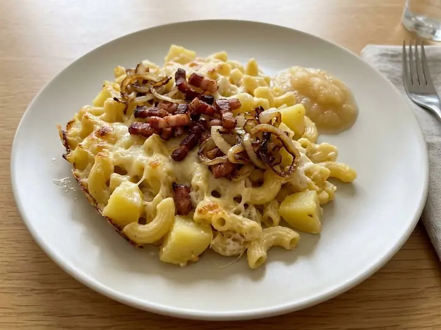

Switzerland · Pork · No. 426
Swiss-Style Älplermagronen (Alpine Macaroni Bake with Bacon and Cheese)
A single portion of Swiss cooking, ready in 20 minutes with 8 minutes of prep. Written for one, so there is nothing to halve and nothing to waste.
Method
- 1
Cook the macaroni and diced potato together in a pan of boiling salted water for 8–10 minutes until both are tender, then drain.
- 2
Meanwhile, fry the bacon and onion in a dry pan until the bacon is crisp and the onion golden.
- 3
Return the pasta and potato to the pan, stir through the cream and most of the cheese until melted and creamy, and season with nutmeg.
- 4
Top with the bacon, onion and remaining cheese. Serve with a spoonful of apple sauce on the side.